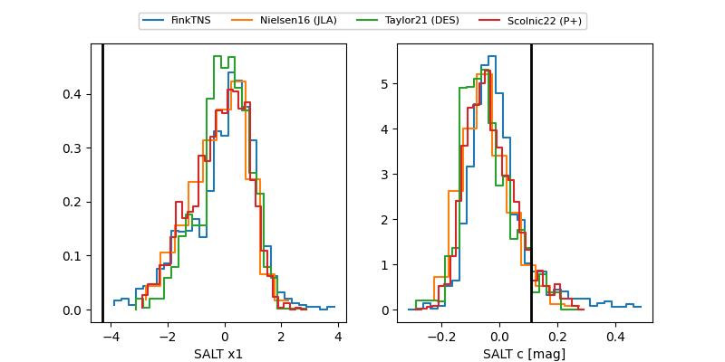

FINK: ZTF25aboqinw
Lasair: ZTF25aboqinw
ALeRCE: ZTF25aboqinw
TNS: 2025xfu
YSE: 2025xfu
ZTF25aboqinw (ztf,fink)
2025xfu (tns,yse)
ATLAS25lfk (atlas)
equatorial (ra, dec) = (357.7437,+80.81567)
galactic (l, b) = (120.4202,+18.24017)

last atlaso=19.21, ztfg=20.09, ztfr=19.58
1 atlaso, 3 ztfg, 2 ztfr detections